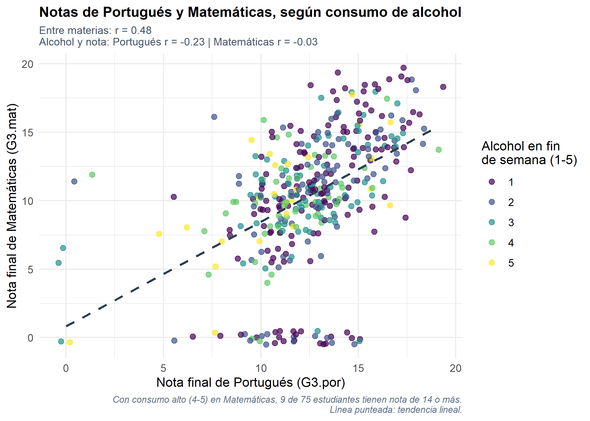
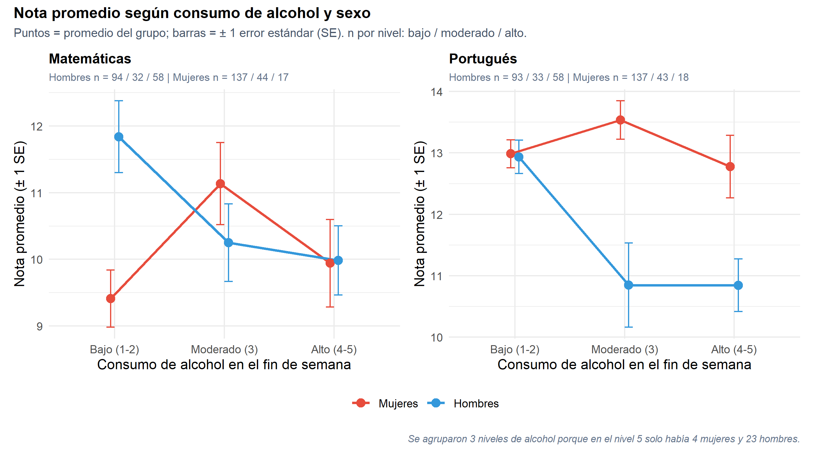
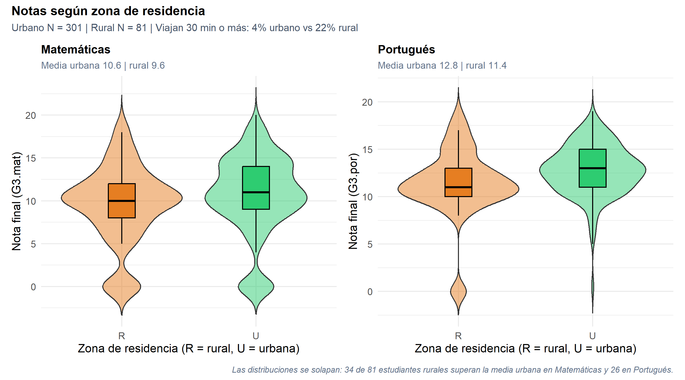
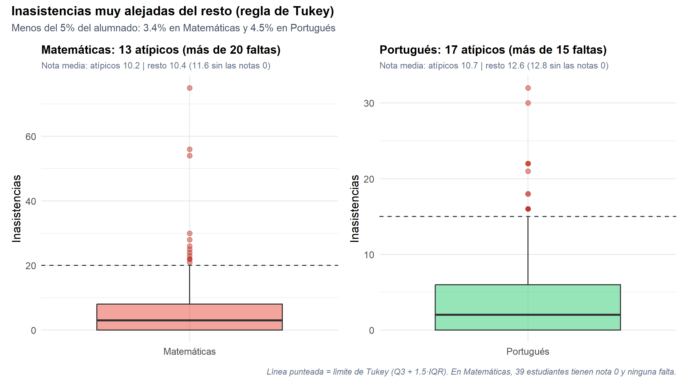

Análisis descriptivo de 382 estudiantes que cursan Matemáticas y Portugués
Maestría en Inteligencia Artificial — Universidad de La Sabana
2026-09-01
[0:00 - 0:28 | 28s] Tema 3 oficial Cohorte de 382 estudiantes Límite: 150 segundos
Nuestra pregunta
«¿Cómo se relacionan el consumo de alcohol y la zona de residencia con las notas y las faltas, y cambia esto entre hombres y mujeres?»
Qué queremos hacer
Qué medimos
[0:28 - 0:50 | 22s] Método de Cortez & Silva (2008) Análisis reproducible en R
Para comparar de forma justa, miramos al mismo perfil de estudiante en las dos materias.
1. Cómo se unieron
2. Qué ganamos
3. Qué debemos recordar
[0:50 - 1:14 | 24s] Dispersión de notas Correlación (r)

Qué significa
Quien va bien en una materia suele ir bien en la otra. El alcohol, por sí solo, dice poco sobre la nota de un estudiante.
r va de −1 a 1; cuanto más cerca de 0, más débil la relación. Con Spearman (para escalas ordenadas): 0.55, −0.21 y −0.08.
[1:14 - 1:36 | 22s] Promedios por grupo (± 1 SE) 3 niveles de alcohol

| Nota promedio | Bajo (1-2) | Moderado (3) | Alto (4-5) |
|---|---|---|---|
| Portugués · hombres | 12.9 (n = 93) | 10.8 (n = 33) | 10.8 (n = 58) |
| Portugués · mujeres | 13.0 (n = 137) | 13.5 (n = 43) | 12.8 (n = 18) |
| Matemáticas · hombres | 11.8 (n = 94) | 10.2 (n = 32) | 10.0 (n = 58) |
| Matemáticas · mujeres | 9.4 (n = 137) | 11.1 (n = 44) | 9.9 (n = 17) |
Qué significa
En Portugués, el promedio de los hombres baja al pasar de consumo bajo a moderado y luego se mantiene; el de las mujeres queda cerca de 13. En Matemáticas los hombres también bajan y las mujeres no siguen un patrón claro. Hay pocas mujeres con consumo alto: interpretar con cautela.
[1:36 - 1:53 | 17s] Violín + caja Diferencia de promedios con IC 95%

| Nota promedio | Urbano | Rural | Diferencia (rural − urbano) |
|---|---|---|---|
| Matemáticas | 10.6 | 9.6 | −1.1 (IC 95%: −2.2 a 0.1) |
| Portugués | 12.8 | 11.4 | −1.4 (IC 95%: −2.2 a −0.5) |
Qué significa
En Portugués la diferencia es clara: el intervalo no incluye el 0. En Matemáticas es incierta: el intervalo sí incluye el 0. Además, las notas de ambas zonas se solapan mucho.
IC 95%: rango de valores razonables para la diferencia real entre zonas. Viaje de 30 min o más = códigos 3 y 4 de traveltime (escala 1 a 4).
[1:53 - 2:10 | 17s] Regla de Tukey (IQR) Atípicos en faltas

Atípico = valor muy alejado del resto. La regla de Tukey es una forma estándar de detectarlos: más de Q3 + 1.5·IQR.
| Límite (faltas) | Atípicos | Máximo | Nota media: atípicos → resto | |
|---|---|---|---|---|
| Matemáticas | 20 | 13 (3.4%) | 75 | 10.2 → 10.4 |
| Portugués | 15 | 17 (4.5%) | 32 | 10.7 → 12.6 |
Qué significa
Menos del 5% de los estudiantes falta muy por encima del resto. En Portugués, ellos tienen notas más bajas. En Matemáticas los ceros bajan el promedio del resto (sin ellos: 11.6 vs 10.2), y con solo 13 casos la comparación es incierta.
[2:10 - 2:30 | 20s] Hallazgo → significado → cuidado Asociaciones, no causas
1. Alcohol y notas
r = −0.23 (Por.) · −0.03 (Mat.)
HallazgoEn Portugués, más alcohol va de la mano de notas algo más bajas, sobre todo en hombres. En Matemáticas, casi nada.
Qué significaEl alcohol por sí solo dice poco sobre la nota de un estudiante.
CuidadoEs una asociación, no una causa; hay pocas mujeres con consumo alto.
2. Zona rural
−1.4 pts en Portugués
HallazgoLos rurales promedian 1.4 puntos menos en Portugués; en Matemáticas la diferencia es incierta. 22% viaja 30 min o más, frente a 4% urbano.
Qué significaPuede haber barreras de acceso, pero muchos rurales superan el promedio urbano.
CuidadoUn modelo de IA no debería usar la zona para etiquetar a nadie.
3. Faltas muy altas
13 y 17 estudiantes
HallazgoSon menos del 5% del alumnado. En Portugués, sus notas son 1.9 puntos menores.
Qué significaEs un grupo pequeño al que conviene acompañar.
CuidadoLos 39 ceros de Matemáticas distorsionan la comparación.
¡Muchas gracias! • Juan Nicolás Patiño Rodríguez
Chrome bloquea la cámara en enlaces file:/// por seguridad.
Para activar tu cámara, ejecutá en terminal:quarto preview actividades/02-estadistica-descriptiva/presentacion.qmd